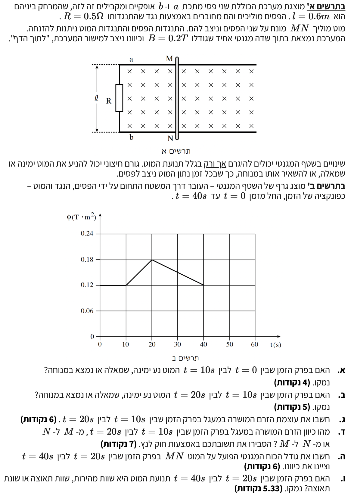

פתרון שאלה 5 - חשמל ומגנטיות
בגרות 2009 (5 יח"ל)
לפנינו מערכת ובה מוט מוליך הנע על גבי פסים במקביל לנגד, בתוך שדה מגנטי אחיד. השאלה עוסקת בחוק פאראדיי, חוק לנץ והכוח המגנטי הפועל על מוליך נושא זרם. ניגש לפתרון צעד אחר צעד!
עודכן:
--- --:--:--

[תמונת השאלה המקורית]
לא נמצאה תמונה בשם question-image.png באותה תיקייה.
מה נתון:
אנו בוחנים את המערכת בפרק הזמן שבין \(t = 0\) לבין \(t = 10\text{ s}\).
מתוך "תרשים ב", בפרק זמן זה השטף המגנטי קבוע ושווה ל- \(0.12\text{ T}\cdot\text{m}^2\).
- השדה המגנטי האחיד קבוע: \(B = 0.2\text{ T}\).
- המרחק בין הפסים קבוע: \(l = 0.6\text{ m}\).
- זווית בין השדה המגנטי לנורמל: \(\alpha = 0^\circ\) (או \(180^\circ\)).
מה מחפשים:
האם המוט נע ימינה, שמאלה, או נמצא במנוחה בפרק זמן זה? יש לנמק.
נוסחאות ועקרונות בשימוש:
\(\Phi_B = B A \cos\alpha\)
\(\overline{v} = \frac{\Delta x}{\Delta t}\)
פתרון צעד-אחר-צעד:
השטח הכלוא על ידי המסגרת הוא שטח של מלבן, לכן נוכל לבטא אותו באמצעות מרחק הפסים ומיקום המוט: \(A = l \cdot x\).
נציב את ביטוי השטח לתוך נוסחת השטף המגנטי (כאשר \(\alpha = 0^\circ\)):
\[ \Phi_B = B \cdot (l \cdot x) \cdot \cos(0^\circ) = B \cdot l \cdot x \]
היות והשטף \(\Phi_B\) קבוע (לפי הגרף), וכן גודל השדה המגנטי \(B\) והמרחק \(l\) בין הפסים הם קבועים, נסיק כי המרחק \(x\) חייב להיות קבוע.
אם מיקומו של המוט (\(x\)) אינו משתנה לאורך זמן, הרי שמהירותו היא אפס (\(v=0\)). לכן, המוט אינו נע.
המוט נמצא במנוחה בפרק הזמן שבין t = 0 ל- t = 10s.
טיפ מורה 💡:
השטף המגנטי (מספר קווי השדה החוצים את המשטח) תלוי ישירות בשטח המסגרת הסגורה. אם השטף אינו משתנה, השטח אינו משתנה. מאחר שרוחב המסגרת קבוע, אורכה חייב להישאר קבוע, ולכן המוט חייב לעמוד במקום!
מה נתון:
אנו בוחנים את המערכת בפרק הזמן שבין \(t = 10\text{ s}\) לבין \(t = 20\text{ s}\).
מתוך הגרף, אנו רואים שבפרק זמן זה השטף המגנטי גדל באופן ליניארי מ- \(0.12\text{ T}\cdot\text{m}^2\) ל- \(0.18\text{ T}\cdot\text{m}^2\).
מה מחפשים:
האם המוט נע ימינה, שמאלה או נמצא במנוחה בפרק זמן זה? יש לנמק.
נוסחאות ועקרונות בשימוש:
\(\Phi_B = B A \cos\alpha\)
פתרון צעד-אחר-צעד:
נציב את ביטוי השטח (\(A = l \cdot x\)) לתוך נוסחת השטף המגנטי ונקבל את הקשר: \(\Phi_B = B \cdot l \cdot x\).
מכיוון ש- \(B\) ו- \(l\) הם ערכים קבועים וחיוביים, גדילה בשטף המגנטי (\(\Phi_B\)) מתאפשרת אך ורק אם שטח המסגרת \(A\) גדל.
השטח \(A\) מוגדר כ- \(l \cdot x\). כדי שהשטח יגדל, המרחק \(x\) (מרחק המוט מהנגד השמאלי) חייב לגדול.
כאשר \(x\) גדל, המוט מתרחק מהנגד, כלומר המוט נע לכיוון ימין.
המוט נע ימינה בפרק הזמן שבין t = 10s ל- t = 20s.
טיפ מורה 💡:
זוהי הבנה קריטית: תנועת המוט משנה את "גבולות הגזרה" של הלולאה שלנו. מוט שנע ימינה מגדיל את השטח, ולכן יותר קווי שדה "נלכדים" בפנים - השטף גדל!
מה נתון:
פרק הזמן: \(10\text{ s} \le t \le 20\text{ s}\).
- שטף התחלתי: \(\Phi_{B,i} = 0.12\text{ T}\cdot\text{m}^2\)
- שטף סופי: \(\Phi_{B,f} = 0.18\text{ T}\cdot\text{m}^2\)
- פרק הזמן: \(\Delta t = 20 - 10 = 10\text{ s}\)
- התנגדות הנגד: \(R = 0.5\ \Omega\)
מה מחפשים:
לחשב את עוצמת הזרם המושרה במעגל (גודל הזרם \(I\)).
נוסחאות ועקרונות בשימוש:
\(\epsilon = -N\frac{\Delta\Phi_B}{\Delta t}\)
\(V = RI\)
חישוב:
תחילה, נחשב את גודל הכא"מ המושרה (\(\epsilon\)) בלולאה בעלת כריכה אחת (\(N=1\)):
\[ |\epsilon| = \left| -1 \cdot \frac{0.18 - 0.12}{10} \right| = \left| -\frac{0.06}{10} \right| = 0.006\text{ V} \]
כעת נשתמש בחוק אוהם כדי למצוא את הזרם דרך המסגרת כולה (התנגדות הפסים והמוט זניחה). נבודד את הזרם מהנוסחה (\(I = \frac{V}{R}\)) ונציב את הכא"מ המושרה כמתח המקור:
\[ I = \frac{|\epsilon|}{R} = \frac{0.006}{0.5} = 0.012\text{ A} \]
עוצמת הזרם המושרה במעגל היא \( I = 1.20 \times 10^{-2}\text{ A} \) (או \(0.012\text{ A}\)).
טיפ מורה 💡:
הסימן השלילי בחוק פאראדיי מציין כיוון (חוק לנץ), אך כאשר אנו מחפשים רק את "עוצמת" הזרם (הגודל שלו), אנו לוקחים את הערך המוחלט של הכא"מ. נתייחס לכיוון בסעיף הבא!
מה נתון:
- השדה המגנטי החיצוני (\(B_{ext}\)) מכוון לתוך הדף (\(\otimes\)).
- השטף המגנטי גדל בפרק הזמן \(10\text{ s} \le t \le 20\text{ s}\).
מה מחפשים:
לקבוע ולהסביר באמצעות חוק לנץ את כיוון הזרם המושרה דרך המוט (מ-M ל-N, או מ-N ל-M).
נוסחאות ועקרונות בשימוש:
חוק לנץ: הזרם המושרה יוצר שדה מגנטי שכיוונו מתנגד לשינוי בשטף המגנטי שיצר אותו.
כלל יד ימין: כיוון השדה המגנטי במרכז לולאת זרם ייקבע על ידי סיבוב אצבעות יד ימין בכיוון הזרם, והאגודל יורה על כיוון השדה.
פתרון צעד-אחר-צעד:
- השטף המגנטי המקורי החוצה את הלולאה מכוון "לתוך הדף" והוא הולך וגדל.
- לפי חוק לנץ, המערכת תתנגד לגדילה זו. הזרם המושרה יצור שדה מגנטי מושרה (\(B_{ind}\)) במרכז הלולאה, שכיוונו מנוגד לשדה המקורי - כלומר החוצה מהדף (\(\odot\)).
- לפי כלל יד ימין, אגודל החוצה מורה על זרם שכיוונו נגד כיוון השעון.
- זרם הזורם נגד כיוון השעון יעבור בתוך המוט מהנקודה \(N\) לנקודה \(M\).
כיוון הזרם המושרה הוא מנקודה N לנקודה M.
טיפ מורה 💡:
חוק לנץ הוא למעשה ביטוי של חוק שימור האנרגיה. נדמיין מה היה קורה אילו הזרם המושרה היה זורם בכיוון ההפוך (עם כיוון השעון): במצב כזה, הזרם היה יוצר שדה מגנטי נוסף אל תוך הדף, שהיה מגדיל את השטף אפילו יותר. הגדלת השטף הייתה משרה זרם עוד יותר חזק, שהיה מגדיל שוב את השטף, וכך היינו מקבלים מעגל של הגברה עצמית ואנרגיה חשמלית השואפת לאינסוף "יש מאין" ללא עבודה חיצונית. לכן, הזרם המושרה חייב תמיד ליצור שדה שיתנגד לשינוי שיצר אותו!
מה נתון:
פרק הזמן: \(20\text{ s} \le t \le 40\text{ s}\).
- שטף התחלתי: \(\Phi_{B,i} = 0.18\text{ T}\cdot\text{m}^2\)
- שטף סופי: \(\Phi_{B,f} = 0.12\text{ T}\cdot\text{m}^2\)
- פרק הזמן: \(\Delta t = 40 - 20 = 20\text{ s}\)
- אורך המוט (בתוך השדה): \(l = 0.6\text{ m}\)
- גודל השדה המגנטי: \(B = 0.2\text{ T}\)
מה מחפשים:
את גודל הכוח המגנטי הפועל על המוט בפרק הזמן הנתון, ואת כיוונו.
נוסחאות ועקרונות בשימוש:
\(F = I l B \sin\alpha\)
\(\epsilon = -N\frac{\Delta\Phi_B}{\Delta t}\)
\(V=RI\)
כלל יד ימין (כוח לורנץ על תיל): אגודל מצביע לכיוון הזרם, אצבעות לכיוון השדה המגנטי, כף היד פונה לכיוון הכוח המגנטי הפועל על התיל.
חישוב צעד-אחר-צעד:
שלב 1: חישוב הזרם (\(I\))
נחשב את הכא"מ המושרה ואת הזרם לפי חוק אוהם (\(I = \frac{|\epsilon|}{R}\)) בפרק זמן זה:
\[ |\epsilon| = \left| -1 \cdot \frac{0.12 - 0.18}{20} \right| = \left| -\frac{-0.06}{20} \right| = 0.003\text{ V} \]
\[ I = \frac{|\epsilon|}{R} = \frac{0.003}{0.5} = 0.006\text{ A} \]
שלב 2: חישוב גודל הכוח המגנטי (\(F_B\))
הזווית \(\alpha\) בין הזרם במוט לשדה המגנטי היא \(90^\circ\) (המוט על מישור הדף, השדה פנימה). לכן \(\sin(90^\circ) = 1\).
\[ F_B = I \cdot l \cdot B \cdot \sin(90^\circ) = 0.006 \cdot 0.6 \cdot 0.2 \cdot 1 = 0.00072\text{ N} \]
שלב 3: קביעת הכיוון
- השטף פנימה קטן הפעם. השדה המושרה יהיה פנימה.
- שדה מושרה פנימה יוצר זרם בכיוון השעון. הזרם במוט יזרום מ- \(M\) ל- \(N\) (למטה בשרטוט).
- לפי כלל יד ימין לכוח לורנץ: אגודל כלפי מטה (זרם), אצבעות לתוך הדף (שדה) -> כף היד פונה ימינה.
גודל הכוח המגנטי הוא \( F_B = 7.20 \times 10^{-4}\text{ N} \) וכיוונו ימינה.
טיפ מורה 💡:
האם שמתם לב? השטף קטן כי המוט נע שמאלה! הכוח המגנטי תמיד יפעל כמעין "חיכוך אלקטרומגנטי" המתנגד לתנועת המוט. מאחר שהמוט נע שמאלה, הכוח המגנטי פועל ימינה בניסיון לבלום אותו.
מה נתון:
אנו מביטים על הגרף בפרק הזמן \(t = 20\text{ s}\) עד \(t = 40\text{ s}\). הגרף הוא קו ישר בעל שיפוע קבוע (ושלילי).
מה מחפשים:
האם בפרק זמן זה תנועת המוט היא שוות מהירות, שוות תאוצה או שוות תאוצה משתנה? נדרש נימוק.
נוסחאות ועקרונות בשימוש:
\(\Phi_B = B A \cos\alpha\)
\(\overline{v} = \frac{\Delta x}{\Delta t}\)
פתרון צעד-אחר-צעד:
נפתח את ביטוי השטף המגנטי עבור שטח המלבן הכלוא (\(A=l \cdot x\)): \(\Phi_B = B \cdot l \cdot x\).
נחשב את קצב שינוי השטף על ידי חלוקה בפרק הזמן, ונציב את הגדרת המהירות (\(v = \frac{\Delta x}{\Delta t}\)):
\[ \frac{\Delta \Phi_B}{\Delta t} = \frac{\Delta(B \cdot l \cdot x)}{\Delta t} = B \cdot l \cdot \frac{\Delta x}{\Delta t} = B \cdot l \cdot v \]
ביטוי זה מראה כי המהירות \(v\) פרופורציונלית לקצב שינוי השטף \(\frac{\Delta \Phi_B}{\Delta t}\) (שהוא למעשה שיפוע הגרף).
מאחר שהגרף הוא קו ישר בפרק הזמן \(20\text{s} - 40\text{s}\), השיפוע שלו קבוע.
הפרמטרים \(B\) ו- \(l\) הם גדלים קבועים. לכן, אם השיפוע קבוע, בהכרח המהירות \(v\) חייבת להיות קבועה.
מהירות קבועה משמעותה שאין שינוי במהירות, כלומר התאוצה שווה לאפס (\(a=0\)).
תנועת המוט היא שוות מהירות (מהירות קבועה ותאוצה אפס).
טיפ מורה 💡:
זהו חיבור נפלא בין קינמטיקה לאלקטרומגנטיות. בדיוק כפי ששיפוע קבוע בגרף מקום-זמן מעיד על מהירות קבועה, כך גם בגרף של שטף מגנטי, כאשר השטף תלוי אך ורק במיקום. שיפוע קבוע = מהירות קבועה!